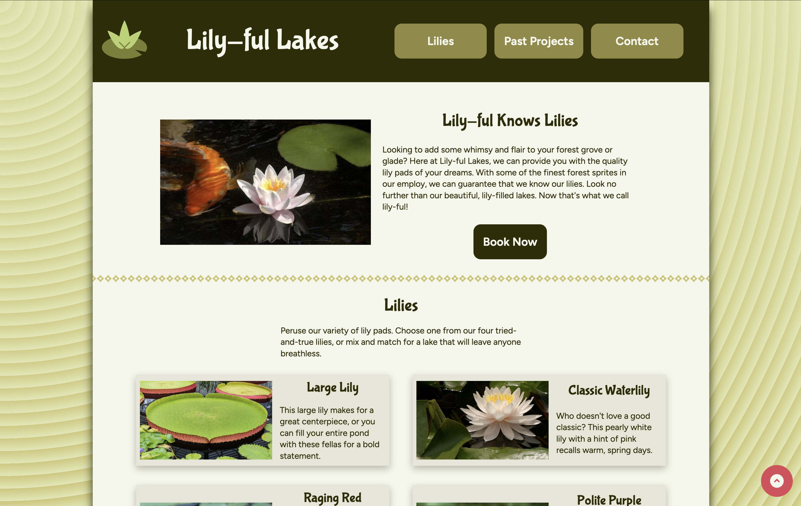
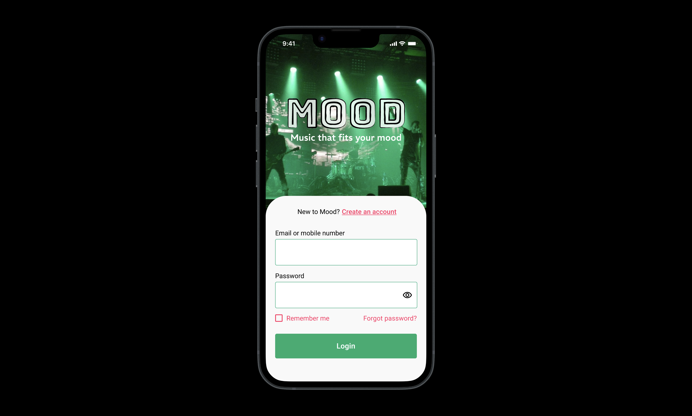
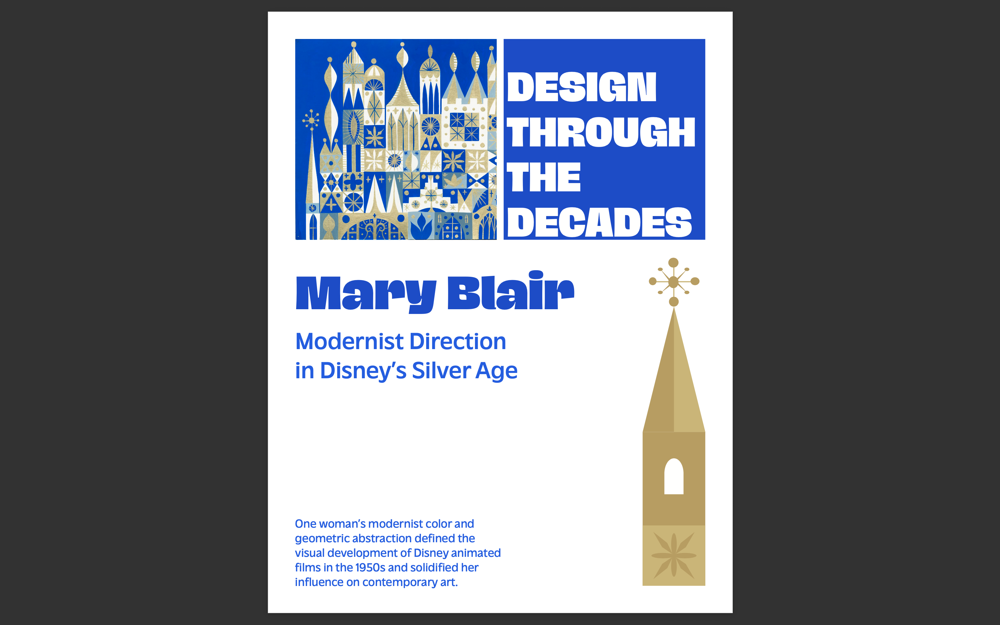
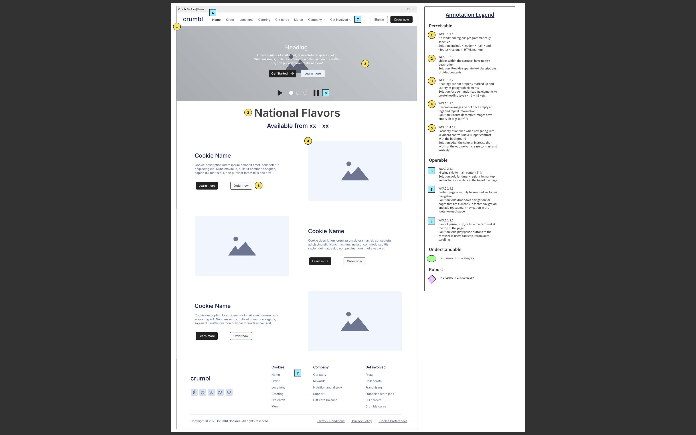

Web Design / UX
Fictitious Small Business Website
Case study for a responsive website that presents structured content tailored to a fictitious small business. Content and layout align to accessibility standards.
Open case studyPortfolio
Web Designer • Visual Information Specialist • UX-Focused Graphic Designer
About
I have a solid understanding of design principles, tools, and techniques in the production of graphic design and print and digital media products. Using knowledge of HTML5, CSS, and JavaScript, I design and build clear, user-centered digital materials that adhere to WCAG standards. My work includes responsive web pages, graphic design, wireframe and prototype development, usability-focused iteration, and accessible communication of complex information. I am skilled in collaborative work, with a strong dedication to translating project requirements into polished designs.
Selected Work
Samples of my recent work can be found below. Projects demonstrate skill in HTML5, CSS, JavaScript, Figma, and Adobe Creative Suite applications.

Web Design / UX
Case study for a responsive website that presents structured content tailored to a fictitious small business. Content and layout align to accessibility standards.
Open case study
Web Design / UX
Case study for a single-page website that presents content tailored to a fictitious cat café. JavaScript was used to add interactive functionality.
Open case study
Prototype / Interaction Design
Case study for a Figma prototype showing user flows and screen design for a music venue mobile ticketing app. Demonstrates skill in creating and using components.
Open case study
Graphic Design
Case study for page layout design for an article belonging in an art and design history journal. Designs were created in Adobe InDesign.
Open case study
Accessibility
Case study for annotated wireframes that point out critical issues in WCAG conformity of an existing website. Proposes solutions to noted issues.
Open case studySkills
Contact